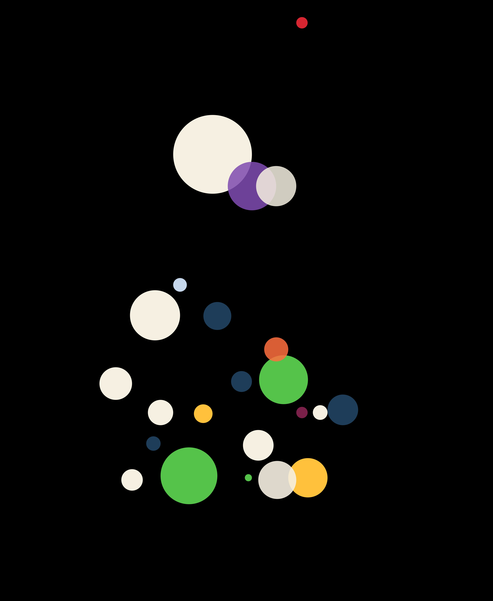

Constellations
Visualization of 88 constellations based on the timeline of their discovery
The stars in the night sky are divided into many constellations. IAU(International Astronomical Union) recognizes 88 constellations. Many of the constellations are named after characters or objects taken from ancient greek myths.
In this project, constellations were grouped together based on when they were dicovered. Therefore, all the constellations were divide into four groups: 2nd century CE, 1500-1600, 1600-1700, 1700-1800. Each constellation is represented by a circle. The circles are color coded by their last letter (constellation names ending with 'a' are one color, 's' another color, and so on). The diameter of a circle is based on the solid angle (area) of a constellation. The timeline of the constellation is the x axis. The number of letters in the name of a constellation (like 'Orion' has 5 letters) is the y axis.

Constellations discovered in 2nd century CE
Constellations discovered between 1600s-1700s

Constellations discovered between 1700s-1800s
Complete Set